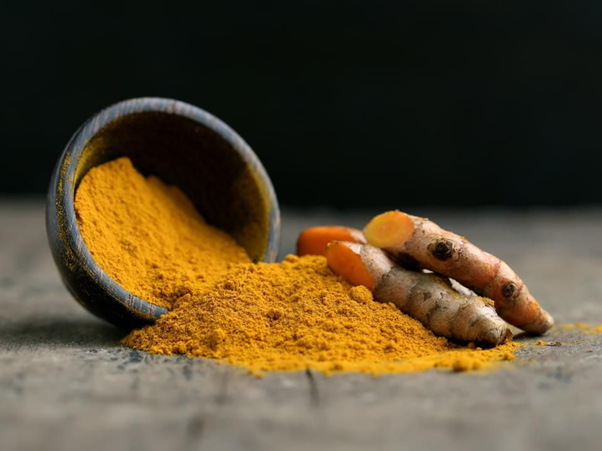
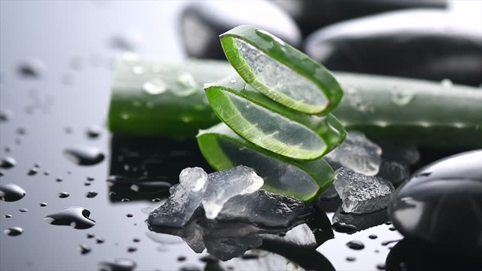
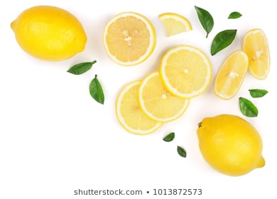
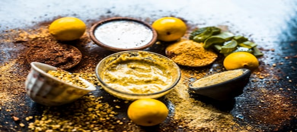

Top 5 Home Remedies For Skin Care
Skin is the most exterior part of our body and hence has to face a huge resistance and disturbance from various issues like pollution, dirt, sunlight, etc. Thus, to care of such a sensitive tissue of our body is must. Therefore here are the 5 Home remedies for a clean and beautiful skin.
Content List:1. Turmeric

Ingredients Required:
- 1/2-1 teaspoon turmeric powder
- 4 tablespoons gram flour (also called chickpea flour)
- Milk or water
Method:
- Mix the turmeric powder with the gram flour. To this, add enough milk or water to form a paste.
- Apply this on your face and neck.
- Leave it on for 15 to 20 minutes. Rinse with plain water.
Duration
Use this remedy once or twice a week.
Why so effective:
- Turmeric contains cucurmin, which has strong antioxidant and anti-inflammatory properties.
- It will eliminate the harmful free radicals that are damaging the skin. It also enhances collagen production, and this keeps your skin supple and glowing.
- Gram flour gently cleanses the skin to make it clean and bright.
Benefits:
- Have anti- Inflammatory properties
- Fights off acne
- Reduces dark circles
- Protects sun damage
- Reduces appearance of stretch marks
2. Aloe Vera

Ingredients Required:
- 1 tablespoon aloe vera gel
- A pinch of turmeric
- 1 teaspoon honey
- 1 teaspoon milk
Method:
- Mix all the ingredients. Apply this mixture on the face and neck evenly.
- Leave it on for about 20 minutes.
- Rinse with lukewarm water and pat dry.
Duration
Apply this face pack up to twice a week.
Why so effective:
Aloe vera gel is the ultimate solution for skin problems. Its nourishing and healing properties rejuvenate the skin to give it a natural glow.
Benefits:
- Removes dead skin cells
- Prevents the sign of aging
- Fights acne
- Adds moisture to your skin
- Relieves skin irritation
3. Lemon

Ingredients Required:
- 2 teaspoon lemon juce
- 2 teaspoon sugar
Method:
- Mix the ingredients and apply the mixture on your face.
- Scrub in a circular motion and leave it on for 10 minutes.
- Rinse off with warm water to reveal glowing skin.
Duration
Repeat this twice a week.
Why so effective:
The sugar granules help to get rid of dead cells. Lemon cleanses, bleaches, and also removes tan. It is one of nature’s best skin brightening agents.
Benefits:
- Makes your skin lighter and brighter
- Works as clarifying moisturizer
- Has anti ageing serum
- Eliminates excess of oil
- Reduces acne scars
4. Ubtan

Ingredients Required:
- 1 cup split red lentils (masoor dal) or chickpea flour (besan)
- 1/4 cup raw rice
- 8-9 almonds
- 1/2 cup oatmeal
- A pinch of turmeric
- Water or rose water
Method:
- Grind the lentils, rice, and almonds either separately or together.
- To this powdered mixture, add the oatmeal and turmeric powder.
- Mix well and add enough water or rose water to make a smooth paste.
- Apply this paste evenly on the face and neck. You can also apply this pack all over the body.
- Let the pack dry. Then, wash with normal water.
Duration
Use this ubtan once in 7-10 days.
Why so effective:
Ubtan is basically a face pack recipe for healthy and glowing skin that has been passed down the generations. The coarseness of the lentils, rice, and oatmeal will remove dirt and dead cells from the skin. Turmeric, as we know, will fade out blemishes and give the skin a natural glow. Almonds also nourish the skin with essential oils to keep it hydrated.
Benefits:
- Reduces facial hair
- Clears skin
- Increases fairness
- Reduces unparallel glow
- Cures dark spots
5. Cod Liver Oil
Ingredients Required:
- Cod liver oil capsules
Method:
- Prick open the liver oil capsules and apply the oil present inside on the face and neck.
- Massage it for a minute or two. Leave it on for about 10 minutes.
- Rinse with water. You can also use a mild cleanser.
Duration
Apply cod liver oil once every day.
Why so effective:
Cod liver oil is rich in omega-3 fatty acids, vitamins A and D, EPA, and DHA. These nourish the skin, repair damaged cells, and give the face a radiant glow.
Benefits:
- Reduces Dry skin
- Tightens your skin
- Improves fairness
- Fights dark spot
- Adds moisture to your skin